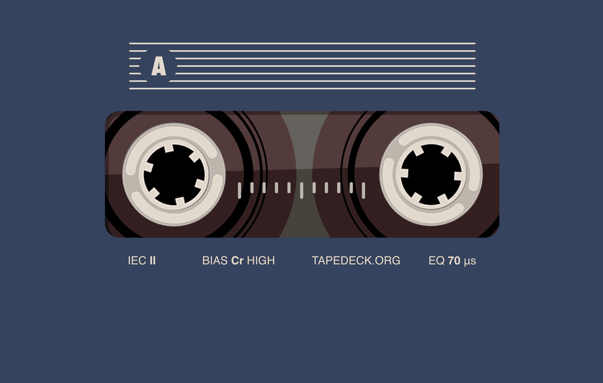

ABOUT PICKME
Let me introduce our team, PICK ME
The beginning of our team
What our team members have in common is that they are attending
Sungshin Women's University. And another thing in common is that
we belong to an in-school club called SCC.
SCC stands for Sungshin Cumpeter Club and is the oldest computer club
in Sungshin Women's University. We met for the first time in this club's
Python study. As we studied Python together, we became closer and shared
many things together. We went on a trip to Gapyeong, Gyeonggi-do
and ate a lot of delicious food together.
In the meantime, I wanted to spend a meaningful summer together.
All of our team members had that idea. We just found out that
the WFK ICT volunteer group is recruiting a team. Our team participated
in this without delay. We named our team "PICK ME" in the hope that more
people will focus on our team. We are already excited to spend this
summer meaningfully!
Sungshin Women's University. And another thing in common is that
we belong to an in-school club called SCC.
SCC stands for Sungshin Cumpeter Club and is the oldest computer club
in Sungshin Women's University. We met for the first time in this club's
Python study. As we studied Python together, we became closer and shared
many things together. We went on a trip to Gapyeong, Gyeonggi-do
and ate a lot of delicious food together.
In the meantime, I wanted to spend a meaningful summer together.
All of our team members had that idea. We just found out that
the WFK ICT volunteer group is recruiting a team. Our team participated
in this without delay. We named our team "PICK ME" in the hope that more
people will focus on our team. We are already excited to spend this
summer meaningfully!
The goal for this program
Our team's goal this time is to deliver as much as we can to the
students as we can. This is the original purpose of the WFK ICT Volunteer Group.
Closing the global information gap is the goal and reason for this activity.
We are joined by the students in Myanmar. Myanmar has long been interested in
the country because it is famous for its golden country and beautiful
natural environment.
I am very happy to be able to communicate directly with the people of Myanmar
and exchange with them. In this activity, we would like to exchange various things
with each other and know more about Myanmar in detail and reality rather than
unilaterally delivering information and introducing Korea.
I hope that small exchanges between Korea and Myanmar will
remain a good memory for each other.